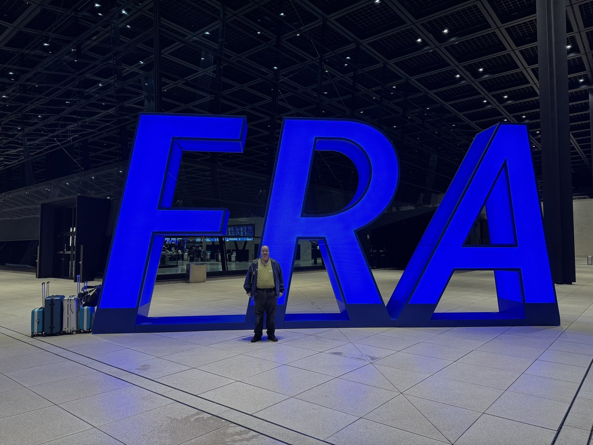
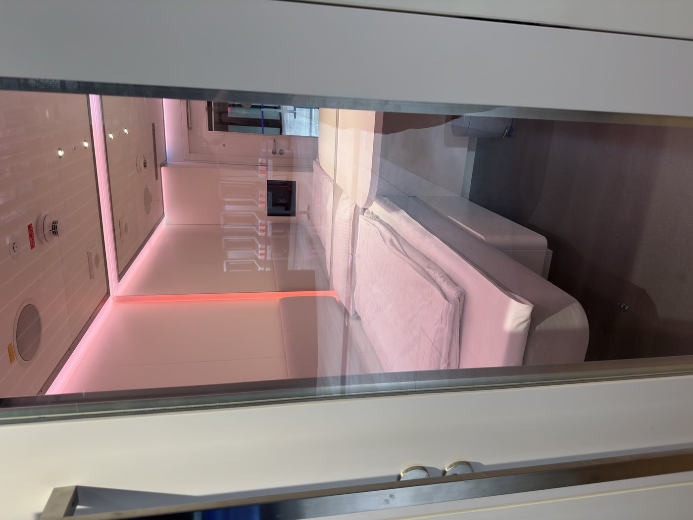
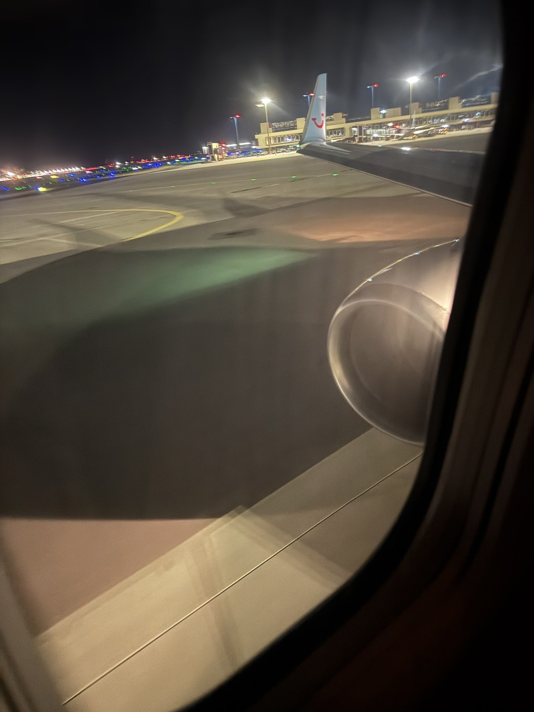
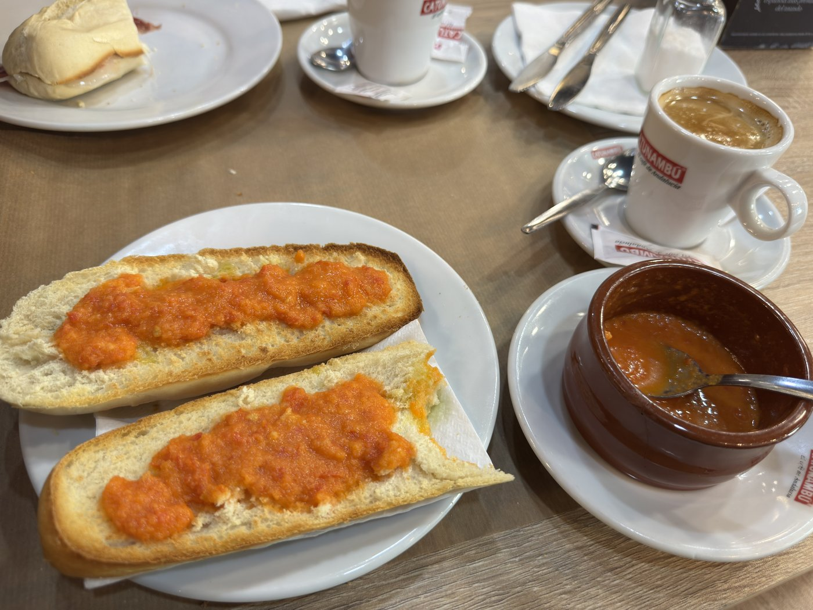
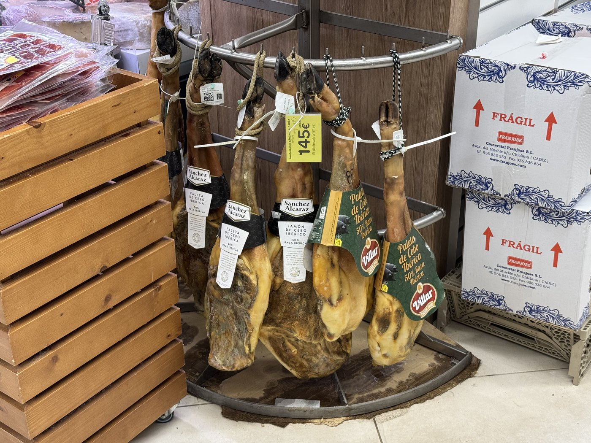
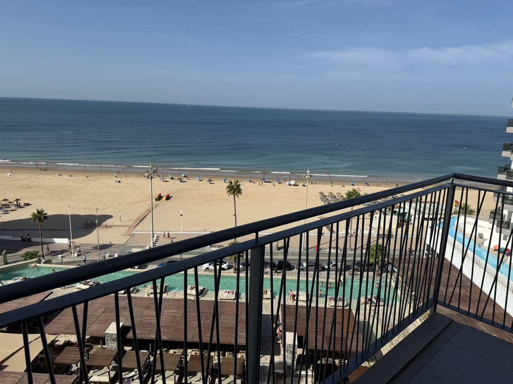
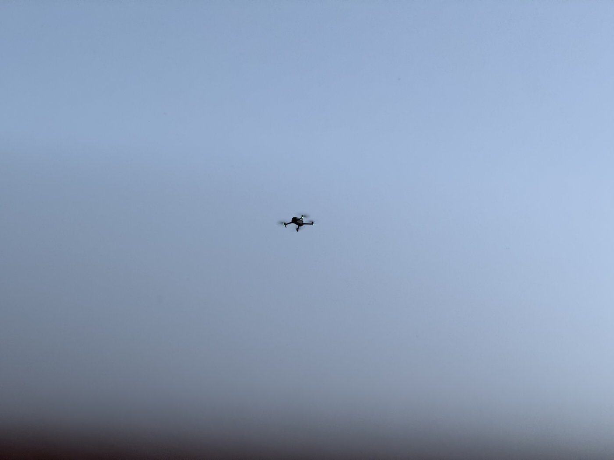

Um 01:30 klingelte der Wecker, um 02:00 stand das Taxi vor der Tür, und wir fuhren zum um diese Zeit angenehm leeren Terminal 3.

Dank Online-Check-in mußten wir nur schnell die Gepäckanhänger ausdrucken, die vorbereiteten Koffer auf den automatischen Scanner stellen, und schon konnten wir durch die Sicherheitsschleuse. Aber irgendwas ist ja immer.
Sassi befürchtete, meine Medikamente könnten Probleme machen. Pustekuchen, alles bestens. Bemängelt wurden stattdessen Sassis Capri-Sonnen, die wir als Wegzehrung eingepackt hatten: Verdacht auf Sprengstoff, Hinzuziehung der Bundespolizei. Das Problem war aber bekannt — offensichtlich schlägt der Scanner bei Capri Sonne gerne mal Fehlalarm. Alles gut. Und diesmal habe immerhin nicht ich den Polizeieinsatz ausgelöst.
Gefängniszelle mit Fernseher
Witzig waren auch diese kleinen Schlafkabinen auf dem Weg zum Gate, die „nap cabs“.

Mit so wenig Schlaf, wie wir bekommen hatten, sahen die sogar ganz verlockend aus. Hätte ich mich da hingelegt, wäre ich garantiert nicht rechtzeitig aufgewacht.
Einsteigen und Pushback vom Gate waren superpünktlich — als erste Maschine des Tages zumindest von Terminal 3 auch nicht weiter verwunderlich, da es noch wenig Gelegenheiten gibt, bei denen etwas haken könnte. Um 04:45 war geplanter Abflug, tatsächlich kam der Pushback schon um 04:41: alle Passagiere pünktlich da.
Der Spruch der Flugbegleiterin während der Sicherheitseinweisung sorgte für große Heiterkeit: „Das Trinken selbst mitgebrachten Alkohols ist verboten — wir haben genug an Bord!“

Der Flug war völlig unspektakulär. Um 04:57 standen wir auf Runway 18, pünktlich um 05:00:05 gingen die Triebwerke auf Vollast, und schon 2:34 Stunden später landeten wir in Jerez de la Frontera — statt der avisierten 2:40. Besser geht’s nicht; da kann man TUIfly durchaus mal ein Lob aussprechen. Auch Gepäckausgabe und Transfer funktionierten wie am Schnürchen: Wir hatten den Ford Transit für uns allein. Und den Fahrer.
„Queríamos un café con leche…“
So waren wir schon gegen neun am Hotel und konnten einchecken — allerdings sollte das Zimmer erst um 15 Uhr bereitstehen. Also ließen wir das Gepäck an der Rezeption und gingen erstmal frühstücken; man wollte uns anrufen, falls es früher fertig würde.
Fürs Frühstück hatte ich im Voraus eine typisch spanische Bar ausgesucht, die praktischerweise nur einen Steinwurf entfernt quer über den Platz liegt. Und ich konnte fast die gesamte Konversation auf Spanisch führen — allerdings nur, weil ich mir die Bestellung vorformuliert hatte: „Queríamos un café con leche, un cortado, una tostada de jamón y una de tomate y aceite, por favor.“

Bis auf die Frage, ob man an der Bar zahlt oder am Tisch abkassiert wird, lief das gesamte Gespräch auf Spanisch. Dafür, daß ich erst auf Niveau A1.2 bin, war ich da schon ein bisschen stolz. Im Hotel hätte uns dasselbe Frühstück 18 Euro gekostet — pro Person.
Die Schinken und die Schuhe
Danach wollten wir etwas Zeit totschlagen, also habe ich Sassi den kleinen Supermarkt direkt unten im Hotel gezeigt. Und da haben sie herrliche Schinken.

Leider habe ich keinen gescheiten Halter, um ihn so hauchdünn zu schneiden, wie es hier üblich ist. Aber das Wasser läuft einem da schon im Munde zusammen.
Um 10:57 checkte ich dann mehr aus Gewohnheit mein Telefon und stellte fest, daß ich zehn Minuten zuvor einen Anruf verpaßt hatte: Das Zimmer war bereit.

Beim ersten Rundgang haben wir dann in einer Strandbar ein paar kühle Getränke genossen und für Sassi ein Paar Strandschuhe gekauft. Ich hatte zum Glück Füßlinge mitgebracht — denn hätte ich mich darauf verlassen, hier vor Ort welche zu kaufen, wäre das nicht gut ausgegangen: Größere Schuhe als Größe 41 gab es in dem Laden nicht.
Auch Souvenirs wollten wir eigentlich kaufen — Strandtücher, vielleicht ein Baseballkäppi oder eine Strandtasche mit Aufdruck. Nichts. Nicht einmal einen typischen Souvenirladen konnten wir finden, ganz anders als auf Gran Canaria, wo man keine zwei Meter laufen kann, ohne über einen zu stolpern. Das Mysterium sollte sich erst am nächsten Tag klären.
Um 16 Uhr waren wir wieder im Hotel — und sind am Aasch die Räuber. Nix gutes mehr gewohnt.
Ein Dröhnchen zum Abschluß
Eigentlich wollten wir am Abend nur noch den Sonnenuntergang genießen — auch wenn die Sonne von unserem Zimmer aus gesehen hinter dem Haus untergeht. Da flog doch tatsächlich eine Drohne vor unserer Nase herum.

Meine Vermutung ist, daß das ein offizieller Flug war: Die Drohne stellte sich fast ausschließlich auf einen bestimmten Punkt über uns — und da ist die Rooftop Bar im zehnten Stock. Vermutlich wieder irgendwas für die sozialen Medien. Ein wenig sparsam aus der Wäsche geguckt habe ich zuerst schon — aber dann dachte ich mir: wenn ich denen das Bild versaue, gut so.
Kurze Zeit später ging die Lampe auf dem Balkon an. Und nicht nur bei uns, sondern auf allen Balkonen. Schalter? Fehlanzeige. Gehört offenbar zur Fassadenbeleuchtung und wird gegen Mitternacht wieder ausgeschaltet. Egal: Die Vorhänge machen leidlich dicht, und wir waren ohnehin so fix und alle, daß wir erstmals gründlich ausgeschlafen haben.